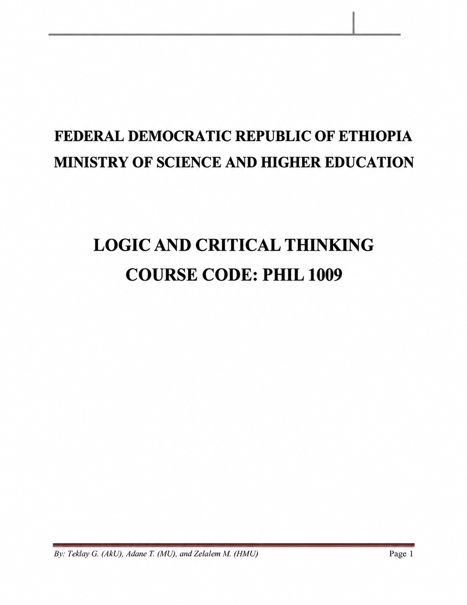
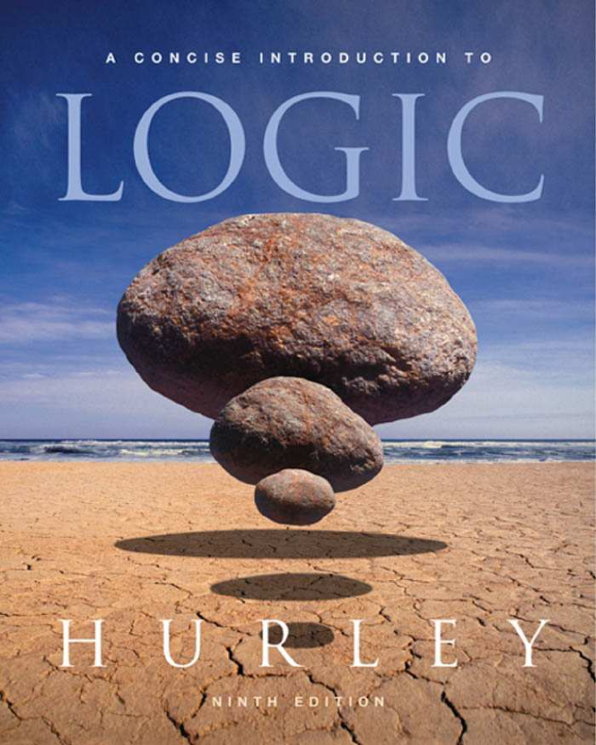

Learning resources
Module & textbook
The set reading for Phil1009, covering logic, philosophy, and the methods of critical thinking.

Critical Thinking module
Freshman-level reading covering the relationship between logic and philosophy, basic logical concepts, logic and language, critical thinking, fallacies, and categorical propositions.
Download module
Textbook
The full course textbook, covering the set chapters in greater depth alongside the module.
Download textbook